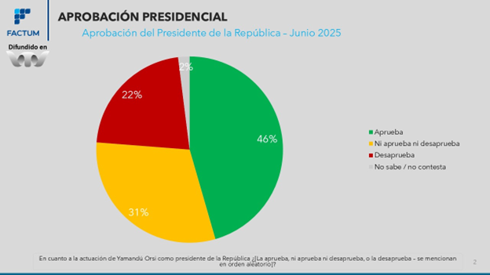
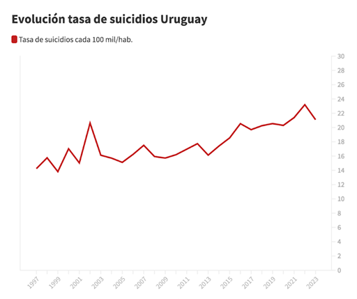
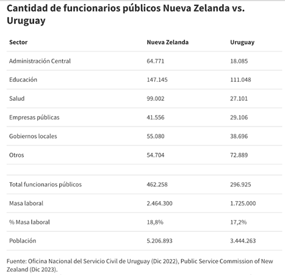
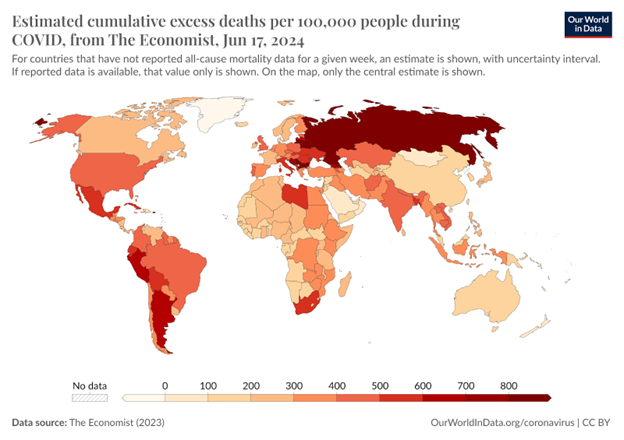
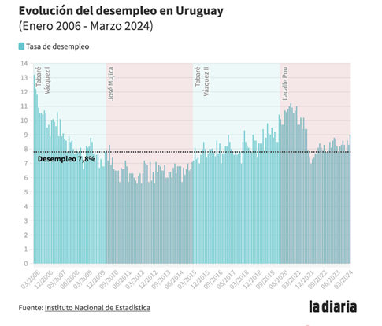

Practicuanti
Bienvenido al cuaderno de prácticos
La idea es que a través de cada práctico puedas ejercitar los conceptos que trabajamos en las unidades temáticas.
¿Cómo me organizo para trabajar en aula invertida?
Recuerda que para sacar el máximo provecho de estos ejercicios la secuencia sugerida es la siguiente:
Mirar los audiovisuales correspondientes a la unidad (asincrónico)
Leer el capítulo del libro (asincrónico)
Transitar por la lección interactiva (fundamentalmente asincrónico, y algunos momentos de trabajo en clase)
Realizar los ejercicios prácticos, recuerda que en varios momentos vamos a utilizar el Panel de análisis de datos (en clase y en forma asincrónica)
Usá el menú de la izquierda para navegar entre los temas.
Introducción
En este curso vamos a explorar por qué la formación en metodología cuantitativa es necesaria para el trabajo en Psicología. Pero antes de meternos de lleno en eso, pensemos:
¿Para qué me sirve desarrollar estas competencias si no voy a ser investigador/a? ¿Conocer sobre métodos cuantitativos es útil incluso fuera del ámbito profesional? ¿Tiene sentido en mi condición de ciudadano o ciudadana?
A lo largo de esta unidad vamos a intentar demostrar que sí.
Noticia 1: Niveles de aprobación presidencial
El siguiente posteo se publicó en redes sociales en junio de 2025, y se aclara que la afirmación se extrae de resultados publicados por FACTUM.
La publicación original de FACTUM presenta el siguiente gráfico:

Tomando en consideración esta información, ¿podemos afirmar que 53 % de la población “no aprueba la gestión de Yamandú Orsi”?
Consulta la fuente de datos aquí: FACTUM Aprobación presidente Yamandú Orsi - Junio 2025
Para leer luego de responder
Aquí encuentras la nota de prensa completa de La Diaria Verifica analizando este asunto: Nota completa en La Diaria Verifica
Noticia 2: Tasa de suicidio en Uruguay
Según datos preliminares, el Ministerio de Salud Pública (MSP) anunció que en 2023 hubo un 8 % menos de suicidios que el año anterior. Según una nota de La Diaria del 11 de abril de 2024:
“La ministra de Salud Pública, Karina Rando, celebró que se quebró ‘una tendencia’ al alza, que se venía registrando desde 2013. En 2023 hubo 754 suicidios, 64 menos que en 2022 y cuatro menos que en 2021.”

En una nota de La Diaria Verifica, el sociólogo Pablo Hein reflexiona que los motivos de la baja pueden deberse a “una baja de la globalidad de la carga de muerte” en Uruguay, ya que en 2023 hubo 5500 muertos menos que en 2022 y 7000 muertes menos que en 2021.
Asimismo, si bien la tasa de suicidios de 2023 es más baja que años anteriores, alertó sobre no referirse a tendencias con un único dato.
¿Es verdadero afirmar que ocurrió un “quiebre” en la tendencia de suicidios?
Para leer luego de responder
Si bien ocurrieron menos suicidios en 2023 que en 2022 no es posible hablar de un quiebre sin conocer las cifras de los próximos años. Asimismo, si observamos las variaciones en el número de suicidios a lo largo de los años se observan descensos locales (años 2008 y 2013 por ejemplo) pero sobre una tendencia sostenida al aumento de la tasa de suicidios. Por lo tanto no es posible afirmar que ocurrió un ‘quiebre’ en la tasa de suicidios.
Noticia 3: Funcionarios públicos en Uruguay y Nueva Zelanda
En junio de 2024, la entonces precandidata a la presidencia por el Partido Colorado, Carolina Ache, dijo en el programa Lado B de TV Ciudad que Nueva Zelanda tiene solamente “63.000 funcionarios públicos y cinco millones de habitantes”.
En una nota de La Diaria Verifica se presentan los siguientes datos obtenidos de la página web de la Comisión de Servicio Público de Nueva Zelanda.

¿Se puede sugerir que hay muchos funcionarios públicos en Uruguay comparado con Nueva Zelanda?
Para leer luego de responder
Si bien al considerar los funcionarios de la categoría “Administración central” parecería cierta la afirmación de Carolina Ache, el conjunto total de funcionarios públicos (Administración central, educación, salud, empresas públicas, gobiernos locales, y otros) es mucho mayor, e incluso supera al de Uruguay.
El número en sí mismo no es informativo si no se pondera por la población de cada país y por la cantidad de personas que conforman la masa laboral (por ejemplo, sin contar a niños y jubilados).
Tomando en cuenta estos factores, se concluye que Uruguay y Nueva Zelanda tienen una proporción de funcionarios públicos similar.
Noticia 4: Muertes por COVID en Uruguay
En un acto partidario en junio de 2024, la exministra de salud María Julia Muñoz dijo:
“Debemos ser claros, la pandemia se manejó mal. No se manejó bien porque el presidente haya puesto la cara todos los días; se manejó mal porque cuando hubo que tomar acciones en defensa de los más necesitados, no se hicieron, y nuestro país es el que tiene más muertes por COVID de personas en el mundo”.
En declaraciones posteriores, aclaró que se refería a que Uruguay fue el país de Latinoamérica con más muertes por COVID.
¿La afirmación de la exministra de salud es correcta o incorrecta?

El exceso de mortalidad es un término utilizado en epidemiología y salud pública que se refiere al número de muertes por todas las causas durante una crisis, por encima de lo que hubiéramos esperado en condiciones “normales”. En este caso, se compara el número de muertes durante la pandemia con las muertes esperadas sin pandemia. Fuente: Our World In Data
Para leer luego de responder
De acuerdo con los datos de exceso de muerte de Our World in Data, Uruguay no presenta la tasa de muertes por COVID más alta del mundo.
Al comparar con otros países de la región como Argentina, Perú, Brasil, Bolivia y México, estos presentan un número mayor de exceso de muertes por COVID que Uruguay.
Por lo tanto, la afirmación de la exministra de salud es incorrecta.
Noticia 5: Desempleo en Uruguay
En una publicidad partidaria, el senador Sebastián Da Silva afirmaba que durante la pasada administración (2020–2023) se alcanzó “la menor tasa de desempleo de los últimos 30 años”, haciendo referencia a la tasa de 7.8 % correspondiente al cierre del año 2023.
¿Es verdadera la afirmación realizada por el senador?

Para leer luego de responder
De acuerdo a los datos del Instituto Nacional de Estadística, el desempleo al cierre de 2023 fue de 7,8 %.
Sin embargo, el número más bajo de desempleo en los últimos 30 años corresponde a una tasa del 5.6 % en diciembre de 2012.
Por lo tanto, la afirmación del senador no es verdadera.
1.1 ¿Necesito saber estadística si estudio Psicología?
Lectura asociada
1.2 Debate: ¿Necesitamos saber estadística para ser buenos psicólogos?
“Como estudiante y futuro profesional de la Psicología necesito formarme en metodología cuantitativa”.
Según el rol que te fue asignado en el debate, sistematiza argumentos a favor/en contra de esta afirmación.
Discute con tus compañeros.
1.3 ¿Cómo funciona el Panel de análisis de datos?

Este Panel tiene integradas una serie de bases de datos nacionales que refieren a temáticas de interés en el campo de la psicología.
- Menú datos: permite seleccionar una de las bases de datos disponibles.
- Acerca de la base: se presenta un texto breve con información de soporte que ayuda a contextualizar los datos que contiene la base.
- Mostrar resumen: Permite visualizar nombres de las variables, su descripción, su tratamiento (tipo de variable) y valores posibles.
Actividad introductoria al Panel
Se te asignará una base de datos. Tu tarea es familiarizarte con ella para presentarla a tus compañeros. Recupera y registra la siguiente información:
Contexto institucional y temática general
Muestra
¿Cuántas variables contiene? ¿Qué variables utiliza? ¿De qué tipo son? ¿Cuál es su escala o nivel de medida?
¿Qué instrumentos crees que utilizaron para obtener las distintas medidas?
¿Qué temáticas crees que se podrían analizar a través de estos datos?
Ahora que sabes un poco más sobre esta base de datos, observa las variables disponibles con mayor detalle.
¿Se te ocurren algunas preguntas/hipótesis de investigación?
¿Qué otras cosas te parecería relevante evaluar? ¿Cómo lo operacionalizarías?
Forma un grupo con los compañeros que han trabajado con la misma base de datos. Pongan en común lo que sistematizaron respecto a la base. Acuerden las preguntas de investigación que se podrían plantear a partir de estos datos.
¿Necesitas ayuda?
¿Qué tipo de preguntas nos podemos hacer? Considera que en el curso vamos a:
- Aprender a resumir muchos datos a través de unos pocos valores que expresan la tendencia central y la dispersión
- Utilizar gráficos para entender y mostrar algunos aspectos de nuestros datos en forma visual
- Explorar la asociación entre dos variables (considerando dirección y magnitud)
- Comparar grupos distintos, o un mismo grupo en distintas condiciones
1.4 El rol de las variables
Ejercicio: Efectividad de una intervención terapéutica
Ya que obviamente leíste el apartado El rol de las variables: predictoras y dependientes del Capítulo 1 antes de venir a clase (¿verdad que sí?), te proponemos el siguiente ejercicio:
Un equipo de investigación está evaluando la efectividad de la terapia EMDR (Desensibilización y Reprocesamiento por los Movimientos Oculares) para tratar la ansiedad generalizada. Diseñan un estudio en el que reclutan a 60 personas con diagnóstico de trastorno de ansiedad generalizada. A la mitad de los participantes se les aplicaron 8 sesiones de EMDR, y a la otra mitad, 8 sesiones de terapia cognitivo-conductual (TCC), usada como comparación activa. Antes y después del tratamiento, los participantes completaron un cuestionario estandarizado de ansiedad (por ejemplo, el GAD-7). Además, les piden que califiquen su nivel de malestar percibido en situaciones sociales (de 0 a 10) y su calidad de sueño durante la última semana.
Identificá la/s variable/s predictora/s (independiente/s). ¿Qué manipula o controla el investigador?
Identificá la/s variable/s dependiente/s. ¿Qué se mide como resultado del experimento?
¿Qué otras variables podrían influir en los resultados si no se controlan?
1.5 Ahora que ya calentaste motores, poné a prueba lo que aprendiste sobre tipos de variable y escalas de medida con la lección interactiva
LECCIÓN INTERACTIVA Introducción a la Estadística: Conceptos fundamentales para el análisis de datos
1.6 Y para terminar, un par de ejercicios múltiple opción, como los del parcial
Elige la opción correcta
Sobre las variables cuantitativas
Pueden ser nominales
La altura es un ejemplo de variable discreta
El número de hijos es un ejemplo de variable continua
Las variables continuas pueden tomar cualquier valor de la escala de medición utilizada
Sobre las variables categóricas
La medida ordinal nos informa si un sujeto/objeto posee más o menos de la característica de interés que otro sujeto/objeto
La medida nominal es continua
No hay diferencias cualitativas entre los sujetos/objetos asignados a categorías diferentes
El peso, medido en kilogramos, es una variable ordinal
Un equipo de investigación quiere evaluar si practicar meditación guiada antes de rendir un examen reduce el nivel de ansiedad en estudiantes universitarios. Un grupo realiza 15 minutos de meditación antes del examen y un grupo control activo realiza 15 minutos de estiramiento. ¿Cuál es la variable predictora?
Nivel de ansiedad antes del examen
El tipo de actividad previa al examen
Nivel de ansiedad después del examen
Tipo de examen que se rinde